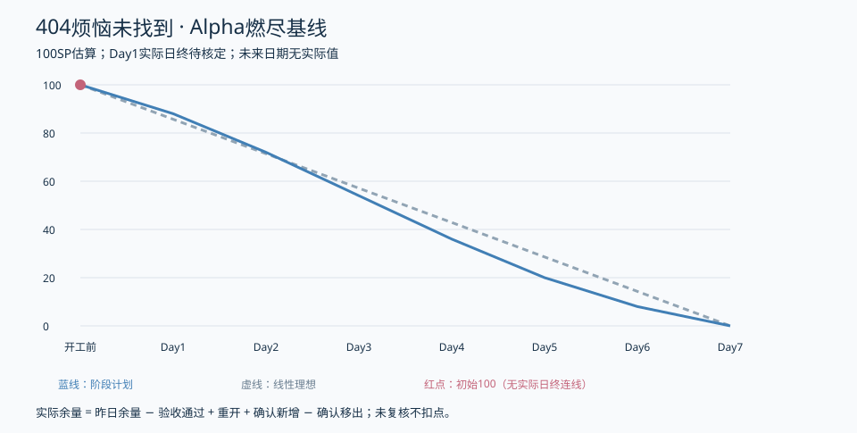

张王昊 / PM交付 · 2026-10-23 · v1.0 本地待评审，外部发布待核实
已整合范围、100SP任务板、代码规范计划、集合与日志候选。成员容量、真实站会/运行证据、非作者复核及博客发布记录仍需据实补齐。未删除原文件。
仓库已有数据服务和成员19项PGlite隔离测试报告；正式PG16、真实检索成功及认证/模型/前端联调仍缺。本次没有重跑业务测试。
固定提交：e773027 · 本地自查报告 · 50份Issue草稿

2SP/项；全部未标已验收。下面是离线阅读视图，数据源见数据/tasks.json。
| ID | 任务 | 主责 | SP | 验收日 | 状态 |
|---|---|---|---|---|---|
| WP01-01 | 范围与现状基线 | 张王昊 | 2 | Day1 | 待评审（本地材料） |
| WP01-02 | 任务拆分与容量登记 | 张王昊 | 2 | Day1 | 待评审（本地材料） |
| WP01-03 | 共享契约与错误映射 | 李泉毅 | 2 | Day1 | 待核验/待执行 |
| WP01-04 | 模型配置与外发边界准备 | 程群 | 2 | Day1 | 待核验/待执行 |
| WP01-05 | 团队启动与页面交接核对 | 曾俊涛 | 2 | Day1 | 待核验/待执行 |
| WP02-01 | 注册API | 李泉毅 | 2 | Day2 | 待核验/待执行 |
| WP02-02 | 登录与会话签发 | 李泉毅 | 2 | Day2 | 待核验/待执行 |
| WP02-03 | 退出与会话撤销 | 李泉毅 | 2 | Day2 | 待核验/待执行 |
| WP02-04 | 资料读取与修改 | 李泉毅 | 2 | Day2 | 待核验/待执行 |
| WP02-05 | 匿名及可信入口上下文 | 李泉毅 | 2 | Day3 | 待核验/待执行 |
| WP02-06 | 应用层任务与授权接入 | 李泉毅 | 2 | Day3 | 待核验/待执行 |
| WP02-07 | 改密与旧会话撤销 | 李泉毅 | 2 | Day3 | 待核验/待执行 |
| WP02-08 | 主动保存与读取清除API | 李泉毅 | 2 | Day4 | 待核验/待执行 |
| WP02-09 | 服务异常与候选配置修复 | 李泉毅 | 2 | Day5 | 待核验/待执行 |
| WP03-01 | 真实主模型适配 | 程群 | 2 | Day2 | 待核验/待执行 |
| WP03-02 | 命名卡确定性路由 | 程群 | 2 | Day3 | 待核验/待执行 |
| WP03-03 | 陪伴最小上下文 | 程群 | 2 | Day3 | 待核验/待执行 |
| WP03-04 | 固定训练状态机 | 程群 | 2 | Day3 | 待核验/待执行 |
| WP03-05 | 超时取消与迟到响应 | 程群 | 2 | Day3 | 待核验/待执行 |
| WP03-06 | 检索摘要来源约束 | 程群 | 2 | Day4 | 待核验/待执行 |
| WP03-07 | 许可与身份失效联调 | 程群 | 2 | Day4 | 待核验/待执行 |
| WP03-08 | 模型异常与合成集回归 | 程群 | 2 | Day5 | 待核验/待执行 |
| WP03-09 | AI协作复盘及演示预案 | 程群 | 2 | Day6 | 待核验/待执行 |
| WP04-01 | 正式迁移与检索契约复核 | 庄剀涵 | 2 | Day2 | 待核验/待执行 |
| WP04-02 | 账号会话资料与保存仓储 | 庄剀涵 | 2 | Day2 | 待核验/待执行 |
| WP04-03 | 真实检索与来源绑定 | 庄剀涵 | 2 | Day3 | 待核验/待执行 |
| WP04-04 | 清除隔离及日历寄存准备 | 庄剀涵 | 2 | Day4 | 待核验/待执行 |
| WP04-05 | 候选迁移与恢复交接 | 庄剀涵 | 2 | Day6 | 待核验/待执行 |
| WP05-01 | 账号与主页页面接入 | 郭昱祺 | 2 | Day2 | 待核验/待执行 |
| WP05-02 | 身份路由与API适配 | 程杰 | 2 | Day2 | 待核验/待执行 |
| WP05-03 | 命名陪伴训练与来源页面 | 郭昱祺 | 2 | Day3 | 待核验/待执行 |
| WP05-04 | 保存历史与清除界面联调 | 程杰 | 2 | Day4 | 待核验/待执行 |
| WP06-01 | 独立文字销毁效果 | 程杰 | 2 | Day4 | 待核验/待执行 |
| WP06-02 | Electron基础能力验证 | 程杰 | 2 | Day4 | 待核验/待执行 |
| WP06-03 | 桌面缩放多屏与资源报告 | 程杰 | 2 | Day5 | 待核验/待执行 |
| WP07-01 | 测试计划与基础自动化 | 曾俊涛 | 2 | Day2 | 待核验/待执行 |
| WP07-02 | 账号与数据库约束测试 | 曾俊涛 | 2 | Day2 | 待核验/待执行 |
| WP07-03 | 模型训练查询异常测试 | 曾俊涛 | 2 | Day3 | 待核验/待执行 |
| WP07-04 | 核心端到端及隐私检查 | 曾俊涛 | 2 | Day4 | 待核验/待执行 |
| WP07-05 | 回归报告与测试随笔 | 曾俊涛 | 2 | Day6 | 待核验/待执行 |
| WP08-01 | 认证日志及桌面安全审查 | 关欣 | 2 | Day2 | 待核验/待执行 |
| WP08-02 | 用途许可与外部输入审查 | 关欣 | 2 | Day3 | 待核验/待执行 |
| WP08-03 | 隔离销毁专项及高危复测 | 关欣 | 2 | Day5 | 待核验/待执行 |
| WP09-01 | 可复现配置与候选运行包 | 曾俊涛 | 2 | Day5 | 待核验/待执行 |
| WP09-02 | 发布冒烟及运维交接 | 曾俊涛 | 2 | Day6 | 待核验/待执行 |
| WP09-03 | 最终版本与链接检查 | 曾俊涛 | 2 | Day7 | 待核验/待执行 |
| WP10-01 | 计划博客及置顶集合 | 张王昊 | 2 | Day1 | 待评审（本地材料） |
| WP10-02 | 七日日志与燃尽记录 | 张王昊 | 2 | Day7 | 待核验/待执行 |
| WP10-03 | 总结与答辩材料整合 | 张王昊 | 2 | Day7 | 待核验/待执行 |
| WP10-04 | 集合终稿及课程提交 | 张王昊 | 2 | Day7 | 待核验/待执行 |
本地交付准备完成 ≠ 课程发布/提交完成。真实会议、心得、运行结果和发布时间不能由AI补造。